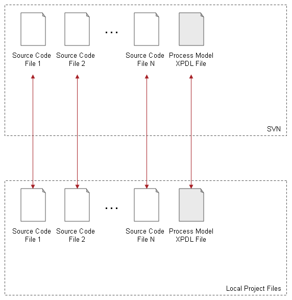
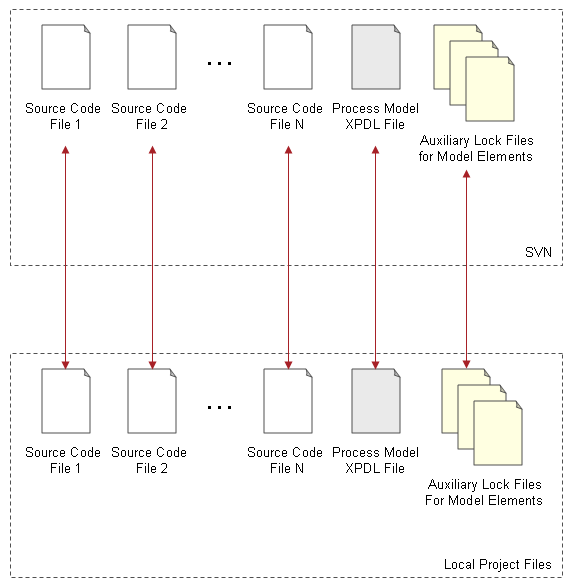

Stardust supports concurrent work on process models stored in a central repository.
To make collaborative modeling work, you need to install plug-ins required for version control system support. Refer to section Version Control System Support for details.
You may work on a Stardust model file in three different modes:
In a modeling environment, a model always knows about its state regarding the above modes and behaves differently depending on this state, for example concerning editing.
Working in Local File Mode means working on a plain XPDL file.
When working in Version Management Mode, the XPDL file is checked into SVN and managed as any other programming artefact. The following diagram illustrates the structure of a development project in Version Management Mode:

Figure: Development Project Structure in Version Management Mode.
When working in Concurrency Management Mode, the XPDL file is checked into SVN and concurrent modeling is managed via auxiliary lock files. The following diagram illustrates the structure of a development project in Concurrency Management Mode:

Figure: Development Project Structure in Concurrency Management Mode
The Concurrency Management Mode adds the concept of locking specific model elements for update in addition to the regular version management. Obtaining a lock enables the lock owner to update a model element and write these changes back.
Stardust supports the open source version control system Subversion for concurrency control. Make sure to install the Stardust Modeling VCS-Connector plug-in. For installation details, please refer to the Installation Guide.
The plug-ins should be listed in your Eclipse plug-in details after restarting Eclipse with the -clean option.
Please note that the concurrency mode only changes user operations in the modeling environment. The Stardust Portals and command line utilities are not affected.